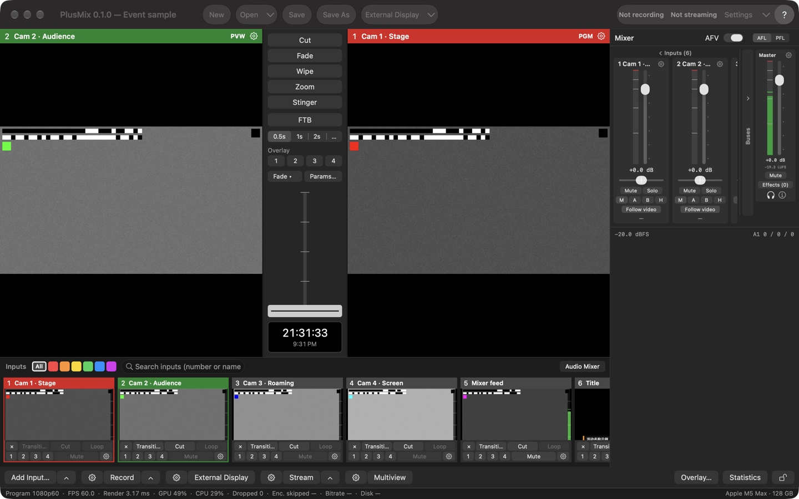

Concepts
One vocabulary is used everywhere: interface, show files, API and this manual (design spec §1.1 (repository: docs/spec/导播台设计方案.md)).
| Term | Meaning |
|---|---|
| Input | A numbered signal source: camera / capture device, DeckLink, screen, video file, image, NDI®, audio-only device, synthetic test source. Numbers are 1–16 (a show holds at most 16 inputs); 0 means "black" |
| Program / PGM | What the audience sees (the large monitor on the right, red title bar) |
| Preview / PVW | What goes on air next (the large monitor on the left, green title bar) |
| Transition | How PVW becomes PGM: Cut, Fade, Wipe, Zoom, Stinger. A show has four transition slots (Transition 1–4), each holding an effect, a duration and parameters |
| T-bar | Manual transition lever (horizontal: 0 on the left, 1 on the right); releasing it past 97 % commits and it snaps back |
| FTB | Fade to black; while on, PGM outputs black and audio fades to silence |
| Overlay 1–4 | Four independently switchable layers on top of PGM: lower thirds, picture-in-picture, logos |
| Bus | The four audio buses: Master, Bus A, Bus B, Headphones |
| Output | Recording, streaming, NDI® output, external display, virtual camera, multiview |
| Tally | Per input: on PGM / on PVW / neither. Cell title bars, multiview borders, Stream Deck colours and external tally lights all read it |
| Show | A JSON file (*.switcher.json) holding inputs, switching, audio, outputs and window layout |
| Tick | One beat of the program clock = one frame; 30 ticks at 1080p60 is 0.5 s |
The main window

The smallest window is 1100×720 (including the toolbar row; a little taller with Large thumbnails). The areas:
| Area | What it does |
|---|---|
| Toolbar | Left: New / Open▾ / Save / Save As — the same actions as the Show menu (New and Open ask first, see Show files); Open▾ = Open Show from Last Quit + the 10 most recent shows + Clear Menu. Centre: External Display▾ — the button turns all external displays on / off, ▾ chooses what each display shows (same as ⚙ External Display in the bottom bar). Right: recording / streaming status (display only, the same text as the bottom-bar buttons, with the running time while recording / live; "Not recording / Not streaming" when off), Settings▾ (the button opens Settings on the page you used last; ▾ lists every settings page) and "?" (= the Help menu) |
| Monitors | PVW on the left, PGM on the right; the title bar shows number and name. The gear at the right end of a title bar opens the input settings of the input on that monitor (greyed out when it is black). Right-click a monitor for "Input Settings… / Show Fullscreen On ▸": one item per display, ticked = that display is showing this monitor full screen; choose an unticked one to show it there, a ticked one to turn that display off (its settings are kept). The PGM title bar lists the visible overlays ("channel · input name"); while FTB is on it reads "PGM · FTB" and blinks slowly. Clicking or double-clicking a monitor does nothing |
| Transition column | See Transitions |
| Mixer | On the right, see Audio; Window › Audio Mixer or the "Audio Mixer" switch at the right end of the input strip hides and shows it |
| Input strip | One cell per input: thumbnail + two rows of buttons; category tags and a search field above; a "＋ Add Input" cell at the end, and you can drop video / image files on it. Details in Inputs › Input strip and cells |
| Bottom bar | Two rows: buttons on top, the status line below. The buttons are listed below |
| Status line | The bottom row of the window, full width. On the left, once a second: program format, frame rate, render time, GPU / CPU, dropped frames, encoder lag skips, recording bitrate, streaming bitrate, free disk (below). These numbers are the same data the API and stats.jsonl report (test standard §7 (repository: docs/testing/测试标准.md)); the UI does not compute its own. On the right: machine information ("Apple M5 Max · 128 GB") normally, notices when there are any (they disappear after 4 s), and an amber reminder bar when a reminder is active |
The three output fields of the status line read "Enc. lag skips n · Rec x Mb/s · Stream y Mb/s":
- Enc. lag skips: frames skipped before encoding because the encoder could not keep up (counted since that route started recording / streaming), from the recording / streaming route with the most; when nothing records or streams, from the NDI® output.
- Rec / Stream: bitrates shown separately; with several routes running, each shows the route with the lowest bitrate (a stream backing off before a reconnect has bitrate 0, so you see 0 b/s; streams that couldn't start or failed don't count as running); "—" when nothing records / streams. The raw NDI® bitrate (about 2 Gb/s) is not included.
Click a thumbnail to put it on PVW; Shift-click cuts it straight to PGM.
Bottom-bar buttons
Most buttons have three parts: ⚙ opens the settings of that kind, the main button does the work, ▴ opens a menu upwards. Missing parts are simply not shown.
| Button | ⚙ | Main button | ▴ |
|---|---|---|---|
| Add Input… | — | The Add Input panel, on the type you used last (same as ⌘I) | Jump straight to one of the eight types; "Recently Added" (up to 5) adds another input of that source without the panel (lowest free number, automatic name); = Input › Add by Type ▸ |
| Record | Menu: Recording Settings… / ISO Recording… | Nothing recording → every route that takes part in recording starts on the same tick; something recording → stop all (asks first). No record output in the show yet → it adds a default one (recording into ~/Movies/PlusMix) and starts | One line per record output "name · state" (✓ = recording; a recording line shows its time: "name · Recording · 01:02:05"); click a recording line to stop just that route (asks first); routes that are off are greyed out (a single route can't be started mid-recording); "Stop All"; "Recording Status…" at the end (the Recording page of the Stream / Recording Status window); = Output › Record ▸ |
| External Display | Menu: one single-choice section per display (PGM / PVW / Multiview / Input n; once a display has been set up the first line is "Off", and an output that is off is marked "(off)"), remove a route / Turn Off All External Displays, External Display Settings… / NDI® Output Settings…; = Output › External Display ▸ | Some are on → turn them all off; all off → turn them all back on as configured; none configured → show PGM full screen on the first non-main display; no second display → open the ⚙ menu | — |
| Stream | Settings › Streaming | Nothing on → start all; some couldn't start or failed → retry only those (healthy ones are not stopped and nothing is asked); all live → stop all (asks first). No destination in the show yet → opens the Streaming page with the cursor in the "Add destination" URL field | Start All / Stop All; one item per destination ("name · state · bitrate"; click = start just that one if off, stop just that one if live, retry just that one if it couldn't start or failed); Streaming Settings… (the Streaming page) / Stream Status… (the Stream page of the Stream / Recording Status window); = Output › Stream ▸ |
| Multiview | Settings › Multiview Layout | The separate multiview window on / off (highlighted while open) | — |
| Overlay… (right group) | — | Opens the Overlay Settings window on the channel you edited last (see Overlay channels) | — |
| Statistics (right group) | — | The statistics window (below) | — |
| 🔒 (far right) | — | Interface lock on / off (below) | — |
The Record / Stream buttons show the worst route and, while recording / live, the running time: "● REC 01:02:05", "● REC 00:14:22 (3)" for three routes recording together; "● LIVE 00:10:00" (a single destination in the show), "● LIVE 00:10:00 (2/3)" (live destinations / all destinations). The time comes from the statistics (the same data as the API), the longest route wins, and a stream's time counts from its start including reconnects; it only changes when a new statistics line arrives (the app keeps no clock of its own). When a route is reconnecting, couldn't start or failed (stopped after the server rejected its authentication) the button turns orange "Stream · 1 in trouble" (dark red when it couldn't start or failed); with only one route on it shows that route's state ("Stream · Reconnecting (attempt 2)", "Stream · Failed"). The tooltip lists "name: state" for every route, with the reason for routes that couldn't start or failed. A first connection reads "Connecting"; only after a destination has been live does a drop read "Reconnecting (attempt n)". The toolbar status is the same text. Details in Outputs › Streaming.
Stopping asks first: the bottom-bar Record / Stream button, stopping one route from ▴, and "Stop all" on the Streaming page all show "Stop recording (n)?" listing the routes to stop (the bottom-bar question also shows each route's state); Return does not land on "Stop", Esc cancels. Hotkeys, MIDI and the API never ask. Settings › General › Confirmations turns the stop question off (the bottom bar, the ▴ menus and the Streaming page all follow it); the question shown on New / Open / format change / Quit while recording or streaming cannot be turned off.
Reminders, statistics window, interface lock
- Reminders: an amber bar at the right of the status line, several joined with "·": the engine has run n minutes with neither recording nor streaming (off by default, n = 5), FTB has been on for 10 seconds (the PGM title bar blinks too), the Master level has stayed below −50 dBFS for 30 seconds (only judged when some input with sound feeds the Master unmuted). Settings › General › Reminders turns each off separately; changes apply immediately.
- Statistics window: the Statistics button in the bottom bar or Window › Statistics, read-only. Five sections: Inputs (fps / repeated / dropped / latency), Rendering (render time / missed / jitter / GPU / CPU / memory), Outputs (each output matched by number to its name, type, source, state, frames, encoder skips, dropped, bitrate, reconnects), Displays (monitor, multiview window, external displays, virtual camera) and Audio (dropouts / underruns / discontinuities, Master peak, short-term loudness). It reads the same statistics line as the status line and the API. "Reset" only restarts the counts inside this window;
stats.jsonl, the API and the status line keep counting. - Interface lock: the lock at the far right of the bottom bar, or Window › Lock Interface (ticked while locked). While locked, mouse clicks in the main window (toolbar, cells, T-bar, mixer, bottom bar) do nothing and the status line says "Interface locked: click the lock at the right end of the bottom bar to unlock; shortcuts still work"; hotkeys, MIDI, the API and the menu bar keep working, and separate windows such as Settings and Statistics are not locked. The button reads "Locked" while locked. The interface lock has no default shortcut (so it can't be hit by accident): use the lock button or the menu.
Menu bar
| Menu | Contents |
|---|---|
| PlusMix | About PlusMix, Check for Updates…, Settings… (⌘,), Shortcuts…, MIDI Mapping…, All Settings Pages ▸, Hide PlusMix, Quit PlusMix (⌘Q) |
| Show | New (⌘N), Open… (⌘O), Open Recent ▸, Open Show from Last Quit, Save (⌘S), Save As… (⇧⌘S) |
| Edit | Undo, Redo, Cut, Copy, Paste, Select All — for text fields; changes to the show (adding / removing inputs, settings) cannot be undone |
| Input | Add Input… (⌘I), Add by Type ▸, Input N "name" Settings… (⇧⌘I, the input on PVW; greyed out while PVW is black), Find Input (⌘F) |
| Transition | Cut / Run Current Transition (Transition 1 · Fade 0.5 s) / Transition 1–4 (titles show effect and duration, the current slot is ticked; a click runs it, the same path as the slot buttons in the transition column; greyed out during a transition) / FTB / Overlay ▸ 1–4 and Overlay Settings…. The grey text on the right is the key bound in the current shortcut table (display only; keys are handled by the shortcut table; by default Space / Return / ⌥1–⌥4 / F / ⌃1–⌃4) |
| Output | Record ▸, Stream ▸, External Display ▸ (the same menus as the bottom bar; Record ▸ / Stream ▸ end with "Recording Status… / Stream Status…"), Turn On All External Displays / Turn Off All External Displays ("Show PGM on Second Display" when none is configured and a second display exists; greyed out without a second display), Multiview Window, Virtual Camera ▸, then the output settings pages (Output Overview…, Recording Settings…, ISO Recording…, Streaming Settings…, External Display Settings…, NDI® Output Settings…, Virtual Camera…, Multiview Layout…) |
| Window | Minimize, Zoom, Audio Mixer, Multiview Window, Input Thumbnails ▸ (Small / Medium / Large), Statistics, Lock Interface |
| Help | PlusMix User Guide (this manual, installed with the app as web pages), Keyboard Shortcuts (a page generated from the current shortcut table, opened in your browser), Export Diagnostics…, Show Diagnostics Folder |
The pages of the Settings window (⌘,) are described in Settings.
How a switch happens
Every control — button, shortcut, MIDI, API, script — only sends a command to the state machine. The state machine applies it, publishes a new immutable snapshot, and the render thread reads the latest snapshot once per tick. Consequences:
- Switches always land on a tick boundary; a Cut has no intermediate frame (a hard requirement of the test standard (repository: docs/testing/en/README.md), V6).
- The UI and the API always see one state; two operators cannot overwrite each other, commands queue in arrival order.
- A command the state machine ignores by rule is not an error; the receipt says
applied = false: Fade while a transition is running, changing PVW / PGM while a transition is running (both preview and cut-to-program are refused, and a half-pulled T-bar counts as running), FTB already at the target. The Transition / Cut buttons on the cells are greyed out during a transition, clicking or Shift-clicking a thumbnail does nothing, and the status line says "Transition in progress: PVW / PGM can change after it finishes".
The full command list is the API reference (repository: docs/api.md) (Chinese); the shortcut table binds the same commands.
Transitions
| Type | Effect | Parameters |
|---|---|---|
| Cut | Atomic swap of PGM and PVW | none |
| Fade | Cross-fade | duration |
| Wipe | New picture wipes in | direction (left → right, right → left, top → bottom, bottom → top, diagonal), softness (0–0.3 in the UI; the API accepts 0–1) |
| Zoom | New picture grows from the centre | duration |
| Stinger | An image / file with alpha on top; the picture underneath swaps at tick n | stinger input number, cut tick |
Transition slots
Transitions are not picked on the fly: they live in four transition slots (Transition 1–4) in the show. Each slot holds one effect, one duration and its parameters (Wipe direction / softness, Stinger input / cut tick) and is saved with the show. Factory slots:
| Slot | Factory setting | Button reads |
|---|---|---|
| Transition 1 | Fade 0.5 s | Fade 0.5s |
| Transition 2 | Wipe left → right 1 s | Wipe → 1s |
| Transition 3 | Zoom 1 s | Zoom 1s |
| Transition 4 | Stinger 1 s, no input chosen yet | Stinger unset |
- Current slot: the one the T-bar, Return, Transition › Run Current Transition and the Transition button on the cells use (Transition 1 in a new show). In the transition column the current slot's button has a steady blue bar on its left (while that slot runs the button turns blue and the bar white). Running a slot makes it the current slot; to change the current slot without running it, use "Use for T-bar (don't run)" in the slot's ▾ menu.
- Changing a slot (effect / duration / parameters) only changes settings, it never runs anything, and works during a transition too: the running one finishes as it started; if you changed the current slot, the new setting applies from the tick it finishes — the same when you change it with the T-bar half pulled and then pull the T-bar back to 0 (cancelling): the new setting applies from that tick.
- Seconds become ticks at the show's nominal frame rate (59.94 counts as 60: 1 s = 60 ticks); the show file stores ticks.
- Older show files (from before transition slots) get the factory slots when opened, with their old transition placed in Transition 1 and Transition 1 current; an old Cut is not placed there (Transition 1 stays Fade 0.5 s) and then the current transition matches no slot (see the end of the next section).
The transition column
Top to bottom: Cut | Transition 1–4 | FTB | Overlay 1–4 | the "T-bar" group | clock.
- Cut: puts PVW on PGM at once. Cut during a running transition completes it immediately (the sound closes on the same tick, see Audio › AFV).
- Transition 1–4: each is a "button + ▾".
- Clicking the button runs that slot: it is selected and started within one tick (the T-bar and Return use it afterwards). The button shows the slot's effect and duration (Wipe with a direction arrow → ← ↓ ↑ ↘) and turns blue while running. During a transition, clicking another slot does nothing (the state machine ignores it; the buttons are not greyed out).
- A Stinger slot with no input yet (the button reads "Stinger unset") can't be run: the state machine refuses to run such a slot — otherwise the picture would hard-cut at the cut tick (tick 1 with the factory cut tick 0; there is no Stinger picture to lay over it) while the state machine waits the full duration (1 s from the factory) before swapping PGM and PVW. Clicking the button, Transition › Transition n and the T-bar row menu first pop up that slot's input list (headed "Transition 4 · Stinger: choose an input first, then click again to run it"); picking an input only changes the slot, and the next click runs it. A cell's Transition button (and its right-click "Take to PGM with the current transition", while it is the current slot) pops up the same input list below the cell's button and sends no command at all (PVW stays as it is); its tooltip reads "Transition 4 is a Stinger with no input chosen: click to choose its input first (PVW stays, nothing runs)". ⌥4, Return, Run Current Transition and MIDI don't run it; the status line says "Transition 4 is a Stinger with no input yet — pick one from ▾ in the transition column"; the compatibility layer's
Transition4returns 409, the Stream Deck button flashes a warning, and the API returns 400. Selecting it ("Use for T-bar") still works. While such a slot is the current slot the T-bar is greyed out and can't be pushed, with an orange line "Transition 4: Stinger, no input" below it (the tooltip says why: pushing it would be a hard cut); it comes back once the slot has an input or another slot is current. A MIDI fader and the API'stbardon't go through the on-screen T-bar and can still push it — the picture changes once they pass the cut tick (straight away with the factory setting) and the swap happens at the top, in effect a hard cut. - ▾ or right-clicking the button: that slot's menu; it only changes settings and never runs; current choices are ticked:
- Effect: Cut (no transition: the T-bar cuts only at the top) / Fade / Zoom / Wipe in five directions (left → right, right → left, top → bottom, bottom → top, diagonal) / Stinger ▸ choose input;
- Duration: 0.5 / 1 / 2 s / Custom… (0.1–10 seconds; a non-preset value adds a "✓ Custom: 0.75 s" line);
- Parameters… (softness, Stinger cut tick): a small panel to the right of the slot for this slot's Wipe direction / softness (0–0.3) and Stinger input / cut tick;
- Use for T-bar (don't run): only makes it the current slot, so the T-bar and Return use it (greyed out during a transition);
- Restore Factory Setting: back to the factory setting in the table above (greyed out when it already is).
- FTB: also "button + ▾". The button fades to black / back from black (red while on); ▾ or right-click sets FTB's own duration: 0.5 / 1 / 2 s / Custom…, independent of the transition duration; the tooltip shows the current value. Tally does not change while black. Changing the duration while it is fading (out or back): from that tick on it carries on from the current brightness with the new duration, and the sound changes along with the picture.
- Overlay 1–4: overlay channel on / off (see Overlay channels); a channel without an input uses the input on PVW. Right-click = Overlay Settings…
- The "T-bar" group:
- The first row is the current slot, e.g. "T2 · Wipe → 1 s ▾" (a Stinger slot with no input shows just "T4 · Stinger ▾"). It opens a list of the four slots (current one ticked); clicking one runs it (the T-bar and Return use it afterwards); all four are greyed out during a transition. Choosing without running lives in each slot's ▾ (the menu says so at the bottom). The row is highlighted for 1.5 s when the current slot changes (another slot run, "Use for T-bar", ⌥n, the API) or the current slot's effect / duration changes.
- Duration segments 0.5s / 1s / 2s / …: change the current slot's duration only ("…" = custom; when the duration is not a preset, that segment shows the actual value).
- T-bar (horizontal): drives the current slot. 0 on the left, 1 on the right; 25 % is a 25 % mix or wipe position; releasing past 97 % commits (PGM and PVW swap) and the bar snaps back to the left; releasing before 97 % holds where it is, and the next push continues from there. During an auto transition you can watch it move right. A MIDI fader does not go through it and still commits and reverses at either end. It is greyed out while the current slot is a Stinger with no input (see "Transition 1–4" above).
- Clock: local time.
Every button's tooltip shows the key bound in the current shortcut table (it follows changes to the table): by default ⌥1–⌥4 run Transition 1–4, Return runs the current slot, Space is Cut and F is FTB (Shortcuts). If the current transition was set directly by the API or a show file and matches no slot, the T-bar row shows only the effect and duration (no slot number), no slot is marked, and the duration segments change that transition (not during a transition).
Overlay channels
Each channel has one input, a rectangle in 0–1 program coordinates, an in / out animation (cut / fade / slide / zoom with a duration), an optional border (for picture-in-picture) and an anchor (zoom animates around it).
Showing and hiding: Overlay 1–4 in the transition column, the small 1–4 buttons on a cell (click = put this input on that channel and show it; if it is already showing there = hide), Transition › Overlay ▸, and the hotkeys ⌃1–⌃4. The column and menu buttons and the ⌃1–⌃4 hotkeys all use the input on PVW for a channel that has no input yet; if PVW is black as well it doesn't turn on and the status line says so ("Overlay n has no input and PVW is black…").
The Overlay Settings window is a normal window (it doesn't block the main window; you can keep clicking cells and pressing hotkeys). Open it from Overlay… in the bottom bar (on the channel you edited last), from "Overlay Settings…" in the right-click menu of Overlay k in the transition column or of a cell's small k button (straight to channel k), or from Transition › Overlay ▸ › Overlay Settings….
| Section | Contents |
|---|---|
| Top | Overlay 1–4 segments; only the current channel is shown; every change applies immediately |
| Source | Input, On (switch), Preview in PVW |
| Full screen / picture in picture | One or the other. Full screen covers the picture (position, anchor and border are hidden, their settings kept); picture in picture = position preset (lower third, bottom right quarter, bottom left, top left, top right, custom) + X / Y / W / H, border (colour, width), anchor. Switching from full screen starts at the bottom right quarter |
| In / out animation | Cut / Fade / Slide (from which edge) / Zoom; duration in seconds (0.5 / 1 / 2 s shortcuts; the tooltip says "= n frames") |
- In a show created in the app all four channels fade in over 0.5 s by default (that is only the app's default for new shows; shows built through the API or the headless engine default to cut).
- Transparent parts of an image / video show PGM through. A full 1920×1080 PNG with alpha plus "Full screen" is the simplest way to do titles (the sample shows (repository: Samples/README.md) do exactly that).
- While a channel is visible (including its out animation) its input counts as on PGM: red tally.
- PVW does not draw overlays by default; tick "Preview in PVW" per channel, or turn all on in Settings › General › Preview all overlays in PVW.
- Channels stack 1 to 4; 4 is on top.
Audio
- Per input: gain (−96…+24 dB), mute, solo, pan, audio delay compensation (0–500 ms; delays the sound only, for a capture device's own A/V offset), bus routing, follow video. The input's mixer strip has the fader (−60…+12 dB), mute, solo, pan, bus sends and follow video; the full gain range and the audio delay compensation are in Input Settings › Audio (both change the same settings).
- Four buses, each with gain / mute / an effect chain. Master feeds recording / streaming / NDI®; Bus A / B are secondary mixes (foldback etc.); the headphone bus carries only the soloed inputs (PFL / AFL) while something is soloed, and otherwise whatever inputs send to H. Which two channels of the output device each bus goes to is chosen in Settings › Audio Devices (needs a multichannel device; see Settings › Audio Devices).
- Effect chains affect the sound, on buses and on every input; a slot that is turned off is bypassed (its parameters kept):
- Buses: parametric EQ (up to 16 bands per slot, the UI offers 3), compressor and peak limiter, processed in chain order; at most 3 slots per bus.
- Inputs: EQ (up to 16 bands, the UI offers 3) + one dynamics slot (compressor), always EQ first, then the compressor (whatever order the chain lists); inputs get no limiter (the UI has no such section; a limiter cell written through the API is listed under "Other effects (kept as is)" in Input Settings › Audio effects and does nothing). The effects sit before the input's alignment delay line and their latency is taken out of that input's own alignment delay, so the program timeline does not move; PGM, the ISO audio track, headphones and meters all get the processed sound.
- There are two compressors, sharing one slot (one or the other; "Type" at the top of the audio settings window's Compressor page, the same choice under "Use compressor" in Input Settings › Audio effects; new ones default to the first):
- Compressor (threshold + ratio): the self-written
compressor— threshold −60…0 dBFS, ratio 1…20 : 1, makeup 0…24 dB, and under "Advanced" knee 0…24 dB, attack 0.1–200 ms, release 10 ms–3 s. No look-ahead and no added delay (the audio settings window shows "Latency self-test: 0 frames (0.00 ms)", measured by the engine when it is installed or changed; whatever is measured goes into the alignment); attack / release are first-order time constants of a linear-domain peak envelope, not the time for the gain in dB to cover 63 % (how much they differ depends on how far the signal goes over the threshold; 20 dB over, the latter is about half the former). - Dynamics processor (threshold + amount): Apple's
dynamicsProcessor, with no fixed ratio — it holds the part above the threshold under "threshold + amount" (called Headroom in Input Settings); it adds a fixed 5.3 ms delay.
- Compressor (threshold + ratio): the self-written
- The limiter (buses only): its attack is the look-ahead (which is the bus's extra delay); the "Ceiling" on the Limiter page (−20…0 dBFS) is the highest level the limited output reaches, 0 = 0 dBFS (
ceilingDbin the API / show file).
- Monitor sync: a compressor or limiter on Master adds processing delay (up to about 35 ms: dynamics processor 5.3 ms, limiter = its attack of 1–30 ms, the self-written compressor 0), and PlusMix delays the picture by the same amount — the PGM / PVW monitors, external displays, the multiview window and recording / streaming / NDI® all follow one delayed timeline, so what you hear on speakers / headphones matches the picture. The amount is shown at the bottom of the Stream / Recording Status window ("Video delayed n ms",
video_delay_msin the statistics); recordings start at 0 on that timeline, with no black frame at the start. The picture follows Master's delay only: if Bus A / B have their own compressor / limiter, the channels they feed are late against the picture by the difference between their delay and Master's. - AFV (audio follows video): with the global switch in the mixer header on, inputs whose "Follow video" is on are only audible on PGM and cross-fade with the transition (same start tick, same length). With the T-bar the sound follows the lever's position; on a commit (T-bar released past 97 %, a MIDI fader at the end) and on a Cut during a transition, the sound closes with a short fade of about 5 ms on the tick the picture swaps, instead of carrying on along the long cross-fade (a Cut itself is that same short fade of about 5 ms). For a presenter microphone or a mixer feed that must always be heard, turn that input's "Follow video" off (on its mixer strip, or Input Settings › Audio › Follow video (AFV)).
- Headphone output (when the device has a channel pair assigned to the headphones): normally carries the "monitor source", picked in the Listen menu (headphones icon on the Master strip): Master (the default in a new show) / Bus A / Bus B / Headphone bus (only what each input sends to H) — the same
setMonitorSourcecommand the API and hotkeys can send, and the menu's tick follows it; while something is soloed in the mixer it carries the headphone bus (only the soloed inputs, AFL after fader / PFL pre fader). So unless the monitor source is the headphone bus, an input's "send to H" is not heard in the headphones (it only goes into the headphone bus itself, whose level the API / statistics show). The solo monitor point can sit before the alignment delay (low latency, the default) or after it (aligned with picture), in Settings › Show Audio — "aligned with picture" only holds while Master has no compressor / limiter: with Master effects the picture is delayed, and the soloed inputs, which don't pass through Master's effects, are still early by that much. - 2-channel devices (built-in speakers, ordinary USB headsets) have no channels of their own for the headphones: turn on "Use the Master channels while monitoring" in Settings › Audio Devices, and while something is soloed the speakers / headphones play only the soloed inputs, back to Master when solo is off; recording / streaming / NDI® keep getting Master, and the switch applies immediately (Settings › Audio Devices).
The mixer
- Header: the AFV switch and AFL / PFL. Inputs on the left (scroll horizontally), Bus A / B / Headphones in the middle, the Master strip pinned on the right; the input group and the bus group each collapse into a narrow bar (by default inputs are expanded and buses collapsed).
- Input strips: name and gear (= that input's audio settings window; right-click also has "Input Settings…"), fader and meter, pan, mute / solo, send to M / A / B / H, follow video, and a line with the AFV gate reading.
- Bus strips (Bus A / B / Headphones / Master): name and gear, fader and meter, short-term loudness (LUFS), mute, "Effects (n)" (opens that bus's EQ page). The Master strip also has the headphones icon (the Listen menu) and "i" (loudness details: momentary / short-term / integrated / loudness range LRA / true peak, updated every second; integrated loudness counts from engine start and can't be reset in this version).
- The Listen menu (headphones icon on the Master strip): Master / Bus A / Bus B / Headphone bus, one of four, the current one ticked (it follows changes made through the API / hotkeys); picking one switches at once. While something is soloed (solo / PFL / AFL) the headphones always carry the soloed inputs (see "Headphone output" above).
- Meters: each strip shows peak and RMS, the Master strip also short-term loudness; true peak, momentary / integrated loudness and LRA are in the loudness details, the API and
stats.jsonl. Recording and streaming loudness use these meters.
Audio settings window
The gear on a mixer strip opens "Audio Settings — Master / Input n" (one window per strip; clicking the same gear again brings it to the front). The left column is that strip's post-fader meter; pages on the right:
| Page | Contents |
|---|---|
| General | Format (48 kHz · stereo), fader reading, mute, "Effect chain latency" (the sum of the enabled slots' latency in this chain, read from audio.effects in the statistics, updated every second; an input without effects shows "0 ms (no effects)"); for inputs also "Input Settings… (gain / pan / delay / sends)". There is no input trim or automatic gain in this version |
| EQ | Enabled + up to 3 bands (centre frequency, gain, Q), Reset |
| Compressor | Enabled + Type, one of two: Compressor (threshold + ratio) — threshold, ratio, makeup, with knee / attack / release under "Advanced" and a "Latency self-test" line below; Dynamics processor (threshold + amount) — threshold, amount, output gain, with attack / release / expansion ratio under "Advanced"; Reset |
| Limiter (buses only) | Enabled + pre-gain, attack, decay, ceiling (−20…0 dBFS); Reset. The attack is the bus's extra delay: on Master the page says "the picture is delayed with it (the status window shows “Video delayed n ms”)", on Bus A / B "headphone / speaker monitoring is late by this much" (see monitor sync above) |
An input's audio settings window has only the General / EQ / Compressor pages; EQ and compressor both affect that input's sound (the same settings as Input Settings › Audio effects). Turning "Enabled" off bypasses the effect and keeps its parameters; "Reset" sets the parameters back to defaults without touching the switch. Hotkeys keep switching the program while an audio settings window is in front.
Show files
The Show menu: New / Open… / Open Recent / Open Show from Last Quit / Save / Save As… (the four buttons at the left of the toolbar are the same actions). The file is readable JSON with the same field names as the API's state (format, PGM / PVW, transition, FTB and overlays sit under mixer, plus schemaVersion, name and layout; CONTRACTS.md §2.8 (repository: docs/CONTRACTS.md), Chinese) and can be generated by scripts (example (repository: Samples/tools/make-shows.py)).
- An input's runtime state (signal or not) and an output's runtime numbers (frames, bitrate) are not in the file; only configuration is.
- Recording / streaming outputs are always stopped when a file is opened; only a button, shortcut or API call starts them.
- With unsaved changes the window's close button shows a dot. Show content counts as a change: inputs, outputs and their settings, the transition slots (effect / duration / parameters) and which slot is current, the FTB duration, overlay positions and animations, audio settings (faders too), the program format, a file input's "Restart When Taken to PGM". So running another transition slot (⌥2 and the like, which changes the current slot) also brings up the dot. Live operation does not: which input is on PVW / PGM, transition progress, FTB, which overlays are showing, pausing / restarting a file input, whether recording / streaming runs, window arrangement.
- New, Open, Open Recent, double-clicking a show in Finder, Quit (⌘Q, or closing the main window — closing the main window quits): while recording / streaming runs it first asks "Creating a new show will stop 1 recording(s), 1 stream(s)"; with unsaved changes it then asks "Save changes to 'name'?" (Save / Don't Save / Cancel; "Save…" for a show that has never been saved). Cancelling at any step changes nothing.
- New, Open, Open Show from Last Quit, changing the program format / show audio and restarting the engine queue up and run one at a time: click Open twice in a row and the second opens after the first has finished, and saving always writes the show that is actually running; a file that can't be read changes nothing (the running show and where it saves stay as they were).
- Quitting never silently rewrites the show file you opened: "Don't Save" leaves the file byte-for-byte unchanged. On a normal quit the current state is also kept in
~/Library/Application Support/PlusMix/LastSession.switcher.json(written only on a normal quit, not after a crash). - Next launch: the show file you last opened or saved is opened (as it is on disk, without unsaved changes); only if you never opened or saved a file, or that file is gone, is the show restored from LastSession (marked unsaved). If one of them is there but can't be read (broken JSON, a value this version doesn't accept), it first says why, then moves on to the next (an empty show if none works). So after New, quitting without saving reopens the earlier file next time. To get back changes you didn't save when quitting: Show › Open Show from Last Quit (it is not a file; saving asks where to save it). Image / video files with relative paths are still looked up in the original show file's directory when restored from LastSession (LastSession stores them resolved to absolute paths; the show file itself keeps them relative).
- The program format and show audio need an engine restart ("Apply and Restart Engine" in Settings); you are asked first while recording / streaming runs, and the Settings window stays open.
- The shortcut table and MIDI map are not in the show file; they are
hotkeys.json/midi.jsonin~/Library/Application Support/PlusMix, next to LastSession (Shortcuts); this Mac's settings (the "This Mac" group in Settings) are not in the show file either.